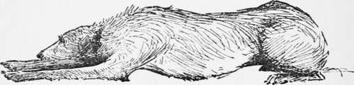

Dog Diseases And Their Cures. Continued
Description
This section is from the book "Horses, Guns, And Dogs", by J. Otho Paget, George A. B. Dewar A. B. Portman, And A. Innes Shand. Also available from Amazon: Horses, guns and dogs.
Dog Diseases And Their Cures. Continued
Consumption, as I said, is far from uncommon ; it is likely to make progress before it is suspected, and is really incurable. It begins with a cough, but there are no signs of fever; the victim gradually wastes away, and in time there is habitual diarrhoea, with internal bleeding from the rupture of blood-vessels. Cod-liver oil may be tried, but it only alleviates the symptoms and defers the end. When the disease has got firm hold, it is kindness to put an end to the sufferer. Inflammation of the lungs, though not necessarily so deadly, is very dangerous. The signs are fever, with dry nose and inflamed eyes ; the dog is labouring hard for breath. The best thing to do is immediately to take advice. If that cannot be done, the treatment recommended is a warm bed in a well-ventilated room, light and nourishing diet, fomentations of hot turpentine, with quinine and cod-liver oil when the dog is in way of recovery. The treatment to be begun with a dose of three parts castor-oil, two parts syrup of buckthorn, and a sixth, syrup of poppies.
Worms are, unfortunately, very common ; they attack dogs universally, whether well or ill cared for, and are especially fatal to puppies. They are either the round worm or the tapeworm. The former is like the common earth-worm, and from four to eight inches in length. There are several species of the tapeworm, and one of them is sometimes yards long. It may be imagined what horrible pests they are, when they knit themselves together and intertwine with the bowels. Sometimes they crawl into the stomach, causing violent vomiting, and thence into the lungs and nostrils. With young dogs especially they may be feared, and should be anxiously looked for. The symptoms are a staring coat, emaciation, notwithstanding a ravenous appetite, low spirits, a hot nose, and an offensive breath. The excrements are frequent, but scanty, and there is an occasional discharge of mucus. If you dose the dog with a strong aperient — a risky treatment if he is weak — you will see what worms he is troubled with. But all treatment is more or less hazardous, for the medicines that destroy the worms are poisons or irritants which affect his health. Some authorities say that the areca nut is harmless, and it is certainly the most innocuous. The doze of grated areca is two grains for each pound of the dog's weight. Cleanliness, with good food, are the surest preventives, but the most dainty dogs will swallow the foulest garbage, and there is no guarding against that.
Skin diseases are troublesome and apt to become loathsome. It would be idle and endless to enter on the many forms they take, for they show themselves offensively enough, and much the same treatment applies to all. There, too, cleanliness and wholesome feeding are the safeguards, but they may be caught by contagion in low company, and sometimes they come more mysteriously. The first thing is thorough washing in warm water with dog-soap. If the patient is visibly out of sorts, he should have a mild aperient. After each washing an ointment is to be well rubbed in — sulphur, four ounces to an ounce of spirit of turpentine, to be used every second day, will generally succeed. A more potent dressing is green iodide of mercury, two drachms made up with two ounces of lard ; but, as the iodide is strong poison, the dog must be muzzled to prevent licking. Even with the sulphur ointment, to guard against the licking, it is well to have an infusion of bitter aloe.
Canker of the ear comes generally of overfeeding or rough exposure. The trouble is that the dog will shake, and covering the ears with a cap increases the internal inflammation. He must have opening medicine, and be carefully dieted. Then nitrate of silver wash or sulphate of zinc should be dropped into the ear-passage every two or three days, changing from the one to the other. The external sores should be touched daily with caustic.1
1 Canker in dogs, as I know from experience, is a cruel disease. Immediately you discover or suspect it by the way in which the dog shakes its head, go to a good veterinary. Taken in time it is curable : neglected it becomes chronic.—Ed.
A dog bite is always an unpleasant thing, Less from the pain, which is little, than from the subsequent anxiety. The odds are so great against there being serious danger of hydrophobia, that it is never worth while worrying. Sir Henry Smith, quoting medical experts, shows that even in tropical India the chances are inappreciable. The very name " hydrophobia " shows how little our ancestors knew about the matter. Should there be rabies, or the fevered condition of some poor brute that is mistaken for it, when he is tied up, far from shrinking from water, he eagerly seeks for it, in unquenchable thirst. If left to himself, in place of bolting ahead through the country, his inclination is to curl up and sulk in some dark corner. In place of being specially affected in the dog-days, attacks of the sort are more common in the spring, and if not bullied and hunted into unwelcome exertion, there is nothing like such frothing of the mouth as in the cases of epilepsy or ordinary sickness. Never have a dog shot that has bitten you. In the first place, very likely it was merely a pardonable ebullition of temper; but if he were really mad, the rabies may not develop for weeks or months, and so you are left in anxiety. Undoubtedly the safer course is to have the bite immediately cauterised. Personally—and I have been occasionally bitten by friends, casual acquaintances, and entire strangers — I have never had recourse to such heroic measures. Sucking, encouraging the bleeding, and carefully washing the wound, are the simple remedies with which i have been satisfied. At the same time, there is a certain risk, and there have been well-authenticated cases of hydrophobia. One of the best authenticated, and the most dramatically told in all its details, is that of the Colonel Lennox who fought the Duke of York—the Duke of Richmond of the memorable Brussels ball. His Grace, when Governor of Canada, was bitten by a tame fox chained in the barrack-yard at Montreal. A month afterwards he died in great agony; for some time there were no symptoms of any kind, but then serious warnings caused grave uneasiness, the most ominous being the unconquerable aversion to crossing water. The Duke was on a tour, and on some pretext he would make a detour rather than leap his horse over the smallest grip or rivulet.
Printed by Ballantyne, Hanson & Co. Edinburgh & London.
Continue to: